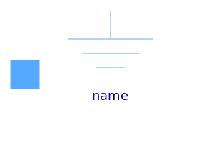
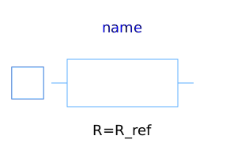
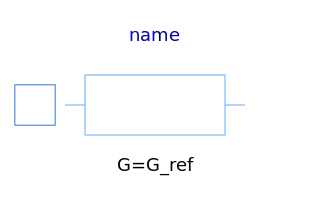
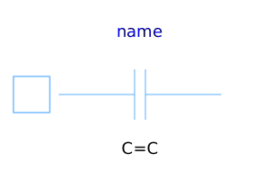
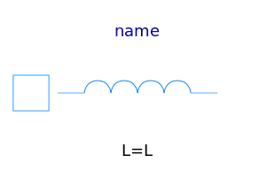
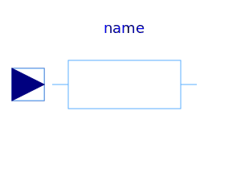
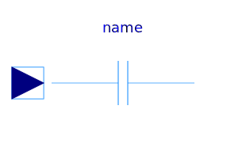
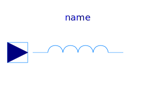
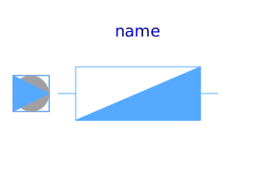

This package hosts basic models for quasi stationary single phase circuits. Quasi stationary theory for single phase circuits can be found in the references.
| Name | Description |
|---|---|
|  Ground | Electrical ground |
|  Resistor | Single phase linear resistor |
|  Conductor | Single phase linear conductor |
|  Capacitor | Single phase linear capacitor |
|  Inductor | Single phase linear inductor |
|
|
Single phase linear impedance |
|
|
Single phase linear admittance |
|
|
Single phase variable resistor |
|  VariableConductor | Single phase variable conductor |
|  VariableCapacitor | Single phase variable capacitor |
|  VariableInductor | Single phase variable inductor |
|  VariableImpedance | Single phase variable impedance |
| VariableAdmittance | Single phase variable admittance |